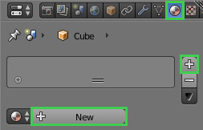
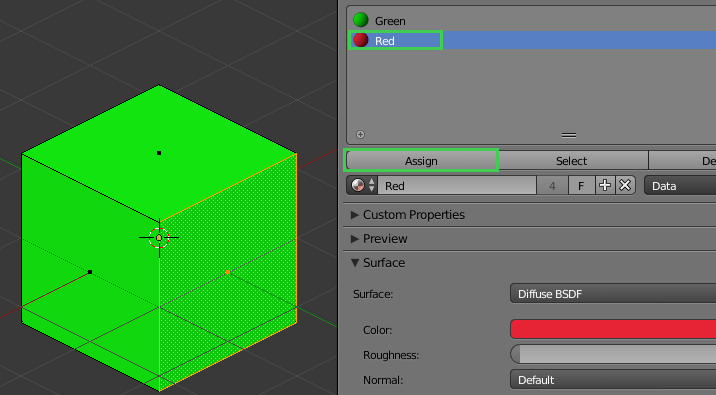
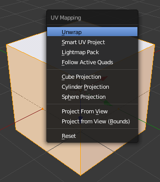
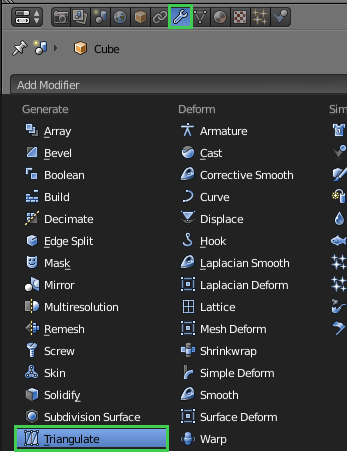
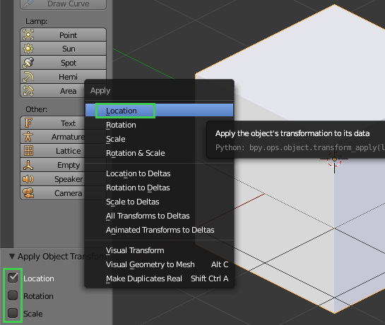
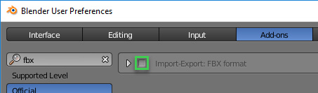
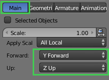
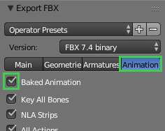

Exporting from Blender
It is possible to export meshes, lights, cameras, transform animations (scale/rotation/location), UV layouts, pivot points, object hierarchy, and material slots from Blender.
Exporting Models
Create Material Slots
Material slots must be created and assigned in Blender before exporting. If this is not done, one default material slot is used for the object.
Note: Only material slots that have a material, and that are assigned to a mesh on the exported object, will be imported.
To create material slots, follow the steps below.
- In the properties panel, select the material tab.
- Press the + to add a new material slot.
- Press the New button.

- Repeat steps 2 to 4 for each material slot to create.
By default, the first material slot will be assigned to the object.
To assign a different material slot to the object, or to assign several material slots to the same object, follow the steps below.
- In edit mode, select the desired faces. (Shift + Right Mouse Click to multi select, A to select all faces).
- In the properties panel, select the material tab.
- In the material slots list, select the desired material slot.
- Press the Assign button to assign the selected material slot to selected faces.

UV Unwrap Models
UV unwrapping your model will create a UV layout. Without a UV layout you will not be able to render any textures on your model in Qt Quick 3D.
There are many different ways and techniques to unwrap 3D meshes. The most basic way to do it in Blender is described below.
- In edit mode, press A to select the whole mesh.
- Press the U key and select Unwrap from the context menu.

Triangulate
- In object mode, select the object.
- In the properties panel, select the modifiers tab.
- In the drop down list, select Triangulate.

- Press Apply.
Note: When exporting as COLLADA, it is possible to do the triangulation in the actual export step.
Bake Actions for Animations
Note: This step is necessary only if you are exporting animations that are using custom curves or object constraints to control the animation.
Actions are data-blocks containing animation data. If you are exporting animations you need to bake actions.
- Press the space bar key.
- Type bake actions.
- Press the Enter key.
Apply Location, Rotation, and Scale
Note: This should not be done when exporting animations.
Applying transform values resets the object's location, rotation, and scale values. Location and rotation values are changed to 0 while scale values are changed to 1. The object itself does not visually change.
- In object mode, select the object.
- Press the Ctrl + A keys.
- Select Location.
- From the check box in the panel, check also Rotation and Scale.

Note: Applying Location will also reset the object's origin (pivot point).
Exporting Lights
You can export lights of any type from Blender to use in Qt Quick 3D.
The following properties are imported:
- Position, rotation, scale
- Brightness
- Light color
- Cast shadows
Light type is imported (and converted if needed).
| Light type in Blender | Will import to Qt Quick 3D as... |
|---|---|
| Point | Point |
| Area | Area |
| Sun | Directional |
| Spot | Directional |
| Hemi | Directional |
Exporting Cameras
You can export perspective and orthographic cameras from Blender to use in Qt Quick 3D.
The following properties are imported:
- Position, rotation, scale
- Clipping start/end
- Focal Length (perspective camera only).
Exporting COLLADA from Blender
- From the file menu, select File > Export > Collada (.dae).
- Ensure that Triangulation is checked on, unless you already have triangulated all meshes.
- Select the Export COLLADA button.
Exporting FBX from Blender
In order to export as FBX, you must have the FBX export add-on installed and enabled in Blender. With the default installation of Blender, the Import-Export: FBX format should be installed. If you do not have the option to export as FBX avaialble, ensure that the add-on is enabled by following the steps:
- Select File > User Preferences.
- Select Add-ons from the top menu bar.
- Search for fbx.
- The add-on should now be visible, enable it by selecting the checkbox next to its name.

Next, to export as FBX, follow these steps:
- Select File > Export > FBX (.fbx).
- Under the Main tab, set Forward to
Y Forwardand Up toZ Up.
- For animations, ensure that the Baked Animation option is checked in the Animation tab.

- Select the Export FBX button.